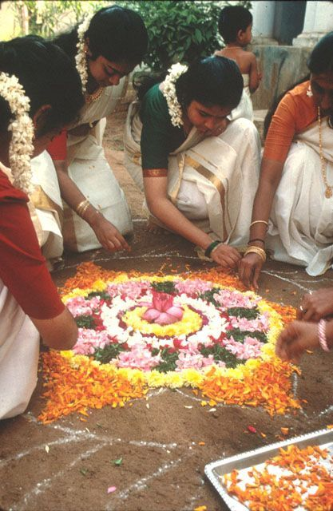

Sports Day:
Sports Day is an exhilarating event that showcases the spirit of athleticism
and teamwork among students in our college. It is a day filled with energy,
excitement, and friendly competition. Students from different departments
and batches come together to participate in various sports and games, ranging
from traditional track and field events to fun relay races and team sports.
The day kicks off with an inspiring opening ceremony, complete with a colorful
parade and the lighting of the sports torch. Throughout the event, the air is filled
with cheers and applause as participants push their limits and exhibit exceptional
sportsmanship. Sports Day not only promotes physical fitness and healthy competition
but also fosters a sense of camaraderie and unity among the college community.
It is a day cherished by all,
leaving lasting memories of triumphs and camaraderie that will
be treasured for years to come.

Cultural Day:
Cultural Day is a captivating celebration of diversity and creativity,
where students from various cultural backgrounds come together to showcase
their unique heritage and artistic talents. The event is a vibrant kaleidoscope
of music, dance, drama, and art that reflects the rich tapestry of cultures within
our college. Colorful traditional attires, captivating performances, and artistic
exhibitions transport the audience to different corners of the world,
fostering a deeper appreciation for the beauty of diversity. Cultural Day
is a platform for students to express themselves, celebrate their identities,
and promote cross-cultural understanding and harmony. The day culminates with a
spectacular grand finale that brings together all participants in a captivating display
of unity in diversity. Cultural Day not only celebrates the essence of various cultures
but also serves as a reminder of
the importance of embracing differences and building a close-knit global community within our college.
